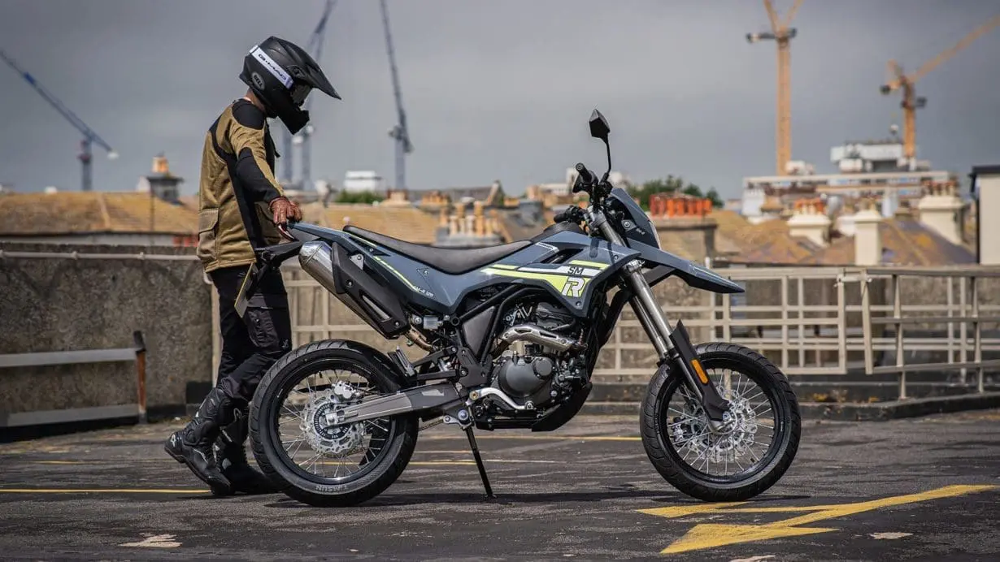

Svet Supermoto motora

Supermoto motocikli su dizajnirani za maksimalnu zabavu i preciznost na asfaltnim podlogama. Spajajući okretnost enduro mašina sa performansama cestovnih trkača, ovi motocikli su stvoreni za oštre zavoje, gradske ulice i karting staze.
Bilo da se radi o agresivnom kočenju, kontrolisanom proklizavanju ili brzom prolasku kroz najzahtevnije krivine, ove mašine pružaju jedinstven osećaj kontrole i čistog adrenalina. Svaki deo motocikla je optimizovan za vrhunsko prijanjanje, trenutno ubrzanje i lako upravljanje u urbanim i sportskim uslovima.
Ovde možete istražiti najbolje modele i pronaći motocikl koji odgovara vašem stilu vožnje i želji za dinamičnom vožnjom.